Shakshat Virtual Lab 
INDIAN INSTITUTE OF TECHNOLOGY GUWAHATI
Introduction
Speech is an acoustic signal produced from a speech production system. From our understanding of signals and systems, the system characteristics depends on the design of the system. For the case of linear time invariant system, this is completely characterized in terms its impulse response. However, the nature of response depends on the type of input excitation to the system. For instance, we have impulse response, step response, sinusoidal response and so on for a given system. Each of these output responses are used to understand the behavior of the system under different conditions. A similar phenomenon happens in the production of speech also. Based on the input excitation phenomenon, the speech production can be broadly categorized into three activities. The first case where the input excitation is nearly periodic in nature, the second case where the input excitation is random noise-like in nature and third case where there is no excitation to the system. Accordingly, the speech signal can be broadly categorized into three regions. The study of these regions is the aim of this experiment.
Signal and System Block Diagrams
Signal and system concepts are linked by a classical block diagram shown in Figure 1. As shown, the system responds to the input signal/excitation and produces output signal/response. For a given design of the system, the output response depends on the type of input excitation. Accordingly, we can have different output responses. The same block diagram can be used for the study of this experiment. For the case of speech, it can be modified as shown in Figure 2. The speech production system responds to the input excitation by producing speech signal. The schematic of human speech production mechanism is shown in Figure 3. The speech production organs include lungs, trachea, glottis, pharynx, oral cavity and nasal cavity. The lungs supply the required air during exhalation for producing speech. Trachea also termed as wind pipe connects the lungs to the glottis. The glottis consists of two thin membranes termed as vocal folds or chords and obstruct airflow during specific category speech to generate the required excitation signal for speech production. The organs above glottis constitute the system part for speech production.
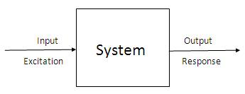
Figure 1: Block diagram representing relation between signal and system
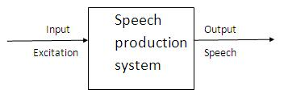
Figure 2: Speech production process as a signal and system block diagram
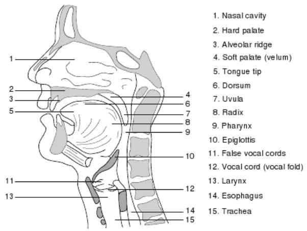
Figure 3: Schematic diagram of human speech production system
Voiced Speech
If the input excitation is nearly periodic impulse sequence, then the corresponding speech looks visually nearly periodic and is termed as voiced speech. The speech production process for the voiced speech can be pictorially represented as shown in Figure 4. During the production of voiced speech, the air exhaling out of lungs through the trachea is interrupted periodically by the vibrating vocal folds. Due to this, the glottal wave is generated that excites the speech production system resulting in the voiced speech. A typical glottal waveform and the corresponding voiced speech are shown in Figure 5. Thus grossly, when we look at the speech signal waveform, if it looks nearly periodic in nature, then it can be marked as voiced speech.
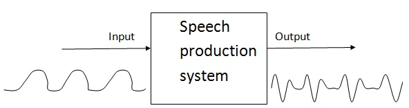
Figure 4: Block diagram representation of voiced speech production
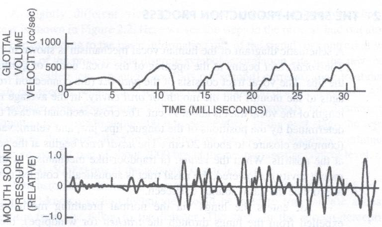
Figure 5: Glotal wave and corresponding speech signal during voiced speech production
The periodicity associated with the voiced speech can be measured by the autocorrelation analysis. This period is more commonly termed as pitch period. A 30 msec segment of voiced speech and its autocorrelation sequence are plotted in Figure 6. The distance of the first largest peak in the autocorrelation sequence from the beginning represents pitch period. This is the important and main distinguishing factor for voiced speech. Since voiced speech is periodic in nature, we expect some fundamental frequency and its harmonics in the spectrum of speech. Figure 7 shows a 30 msec segment of voiced speech and its magnitude spectrum. As it can be observed in the spectrum, there frequency components repeating at regular intervals indicating the presence of harmonic structure. In the frequency domain, the presence of this harmonic structure is the main distinguishing factor for voiced speech. The fundamental frequency of input excitation is also termed as pitch frequency or just pitch .
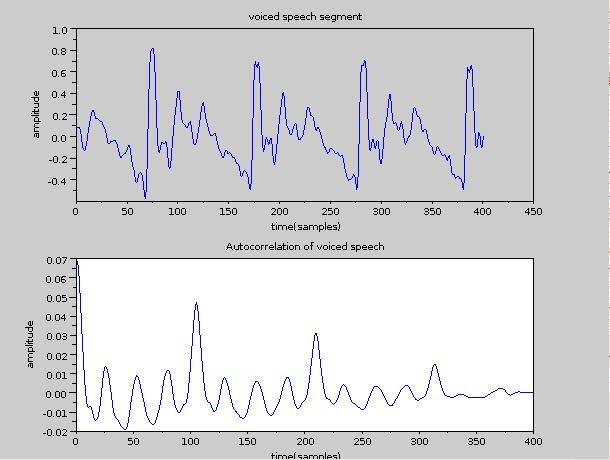
Figure 6: Voiced segment speech and its autocorrelation sequence
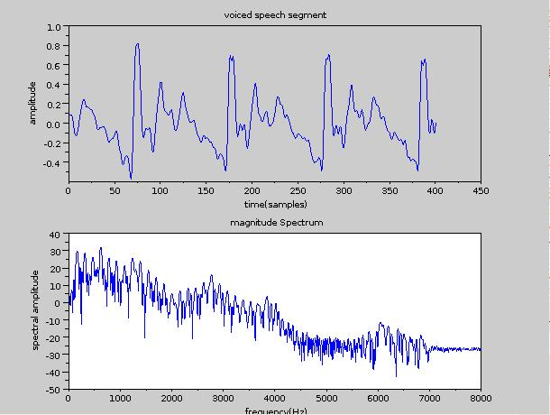
Figure 7: Voiced segment speech and its log magnitude spectrum
Unvoiced Speech
If the excitation is random noise-like, then the resulting speech will also be random noise-like without any periodic nature and is termed as Unvoiced Speech. The speech production process for the voiced speech can be pictorially represented as in Figure 8. During the production of unvoiced speech, the air exhaling out of lungs through the trachea is not interrupted by the vibrating vocal folds. However, starting from glottis, somewhere along the length of vocal tract, total or partial closure occurs which results in obstructing air flow completely or narrowly. This modification of airflow results in stop or frication excitation and excites the vocal tract system to produce unvoiced speech. The typical nature of excitation and resulting unvoiced speech are shown in Figure 8 itself. As it can be seen, the unvoiced speech will not have any periodic nature. This will be the main distinction between voiced and unvoiced speech.
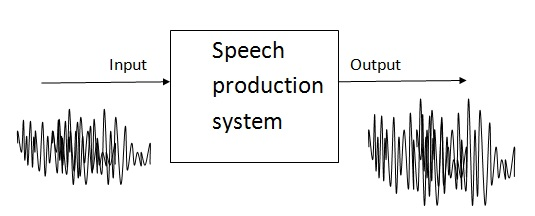
Figure 8: Block diagram representation of unvoiced speech production
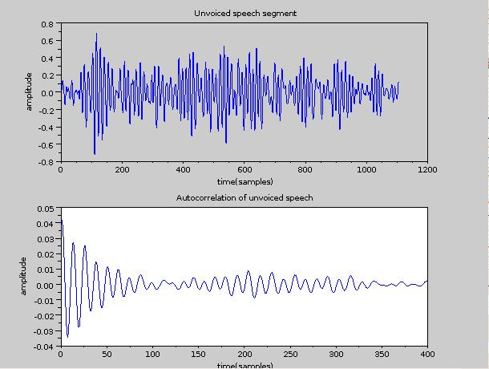
Figure 9: Unvoiced segment speech and its autocorrelation sequence
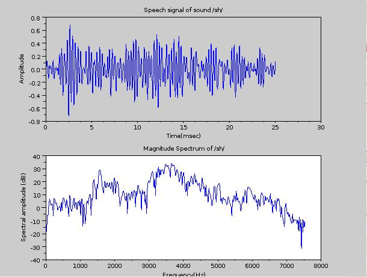
Figure 10: Unvoiced segment speech and its log magnitude spectrum
The aperiodicity of unvoiced speech can also be observed by the autocorrelation analysis. A 30 msec segment of unvoiced speech and its autocorrelation sequence are plotted in Figure 9. As it can be observed there is no strong peak indicating periodicity. This is the important and main distinguishing factor between voiced and unvoiced speech. Figure 10 shows a 30 msec segment of unvoiced speech and its magnitude spectrum. As it can be observed in the spectrum, there is no harmonic structure. In the frequency domain, the absence of this harmonic structure is the main distinguishing factor for unvoiced speech.
Silence Region
The speech production process involves generating voiced and unvoiced speech in succession, separated by what is called silence region. During silence region, there is no excitation supplied to the vocal tract and hence no speech output. However, silence is an integral part of speech signal. Without the presence of silence region between voiced and unvoiced speech, the speech will not intelligible. Further, the duration of silence along with other voiced or unvoiced speech is also an indicator of certain category of sounds. Even though from amplitude/energy point of view, silence region is unimportant, but its duration is very essential for intelligible speech. Figure 11 shows waveforms for the words apa, aTa and ata. As it can be observed between the two vowels there is silence region representing the sounds p, T and t. Even though the signal energy is lowest or negligible, its duration is important for perceiving it. A speech signal for the text Do not ask me to walk like that is also shown in Figure 12. In this case also we can observe the silence regions between several sounds. These are natural and essential for perceiving the information present in it. Suppose if we remove all the silence regions and concatenate only voiced and unvoiced segments, then the signal looks like as given in the same figure. It will be very difficult to perceive information from this signal.
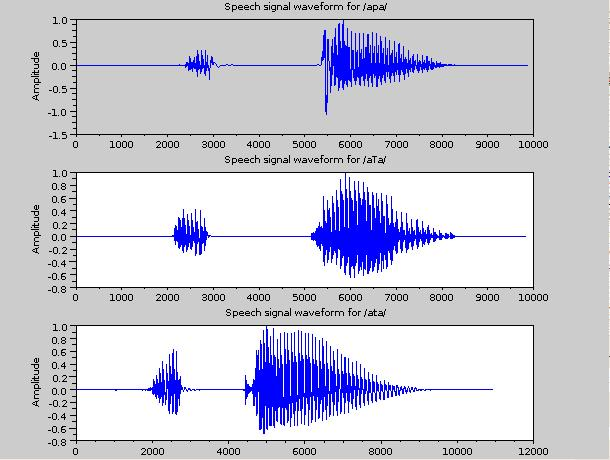
Figure 11: Speech waveforms of apa, aTa, ata. Silence regions between the vowels represent the consonants p,T,t
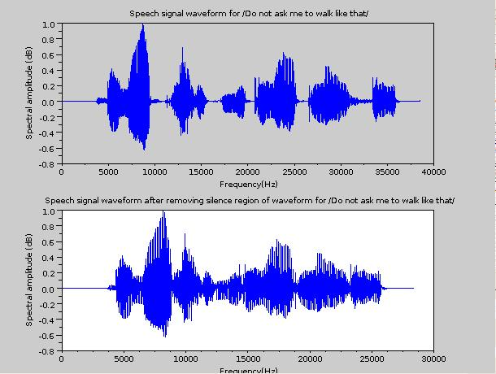
Figure 12: Original speech signal and its silence removed version
Voiced/Unvoiced/Silence Classification of Speech
Above discussion gave a feel about the production of voiced/unvoiced speech and also significance of silence region. Now the next question is, how to identify these regions of speech? first by visual perception and next by automatic approach. In this experiment we will learn only how to do it by visual perception. In the later experiments, we can learn the automatic approach. First and more most distinction is between voiced and unvoiced speech. If the speech signal waveform looks periodic in nature, then it may be marked as voiced speech. Otherwise, it may be marked as unvoiced/silence region based on the associated energy. If the signal amplitude is low or negligible, then it can be marked as silence, otherwise as unvoiced region. Finally, there may be regions where the speech can be mixed version of voiced and unvoiced speech. In mixed speech, the speech signal will look like unvoiced speech, but you will also observe some periodic structure.